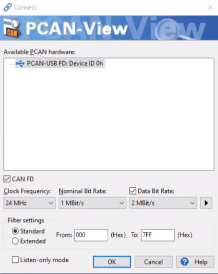

|
MCUSW
|
|
MCUSW
|
This application measures the CPU cycles required for transmission of N number of packets for a given baud-rate and CAN configurations.
Simulates transmission of N number of CAN messages (64 bytes, CAN FD message) the received messages (when in loopback mode) is copied to local variable simulating a copy of the message by communication stack.
Table below list SoC/Cores on which this demo application is tested
| SoC | Host Core | Comments |
|---|---|---|
| J721E | MCU 1 0 & MCU 2 1 | None |
| J7200 | MCU 1 0 & MCU 2 1 | None |
This application depends on multiple components and are detailed in sections below
The profiling application is configured to operate in internal loop-back and interrupt mode by default. This application supports the following configurations:
The below table lists the configuration changes required to change mode. Please ensure to recompile post modifications. We will first go over the different modes and then on the underlying implementation of polling or interrupts.
NOTE: Location of the below flags will change to MCU2_1 specific paths in case application is running on MCU2_1 instead of MCU1_0. Replace "mcu1_0" in the path with "mcu2_1".
| For TX Only | Flag Value | Location |
|---|---|---|
| APP_INSTANCE_1_INST_IN_CFG_ONLY | STD_ON | mcusw\mcuss_demos\profiling\can\can_profile.h |
| CAN_LOOPBACK_ENABLE | STD_OFF | mcusw\mcuss_demos\mcal_config\Can_Demo_Cfg\output\generated\soc\j72xx\mcu1_0\include\Can_Cfg.h |
| CAN_EXT_LOOPBACK | STD_OFF | mcusw\mcuss_demos\profiling\can\can_profile.h |
| CAN_TX_ONLY_MODE | STD_ON | mcusw\mcuss_demos\profiling\can\can_profile.h |
This application would transmit CAN FD messages with extended ID (0xC0) at nominal-rate of 1 Mbps, data-rate at 5 Mbps
| For RX Only | Flag Value | Location |
|---|---|---|
| APP_INSTANCE_1_INST_IN_CFG_ONLY | STD_ON | mcusw\mcuss_demos\profiling\can\can_profile.h |
| CAN_LOOPBACK_ENABLE | STD_OFF | mcusw\mcuss_demos\mcal_config\Can_Demo_Cfg\output\generated\soc\j72xx\mcu1_0\include\Can_Cfg.h |
| CAN_EXT_LOOPBACK | STD_OFF | mcusw\mcuss_demos\profiling\can\can_profile.h |
| CAN_TX_ONLY_MODE | STD_OFF | mcusw\mcuss_demos\profiling\can\can_profile.h |
This application setup to receive CAN FD messages with extended ID (0xC0) at nominal-rate of 1 Mbps, data-rate at 5 Mbps
| For Internal Loopback (default) | Flag Value | Location |
|---|---|---|
| APP_INSTANCE_1_INST_IN_CFG_ONLY | STD_ON | mcusw\mcuss_demos\profiling\can\can_profile.h |
| CAN_LOOPBACK_ENABLE | STD_ON | mcusw\mcuss_demos\mcal_config\Can_Demo_Cfg\output\generated\soc\j72xx\mcu1_0\include\Can_Cfg.h |
| CAN_EXT_LOOPBACK | STD_OFF | mcusw\mcuss_demos\profiling\can\can_profile.h |
| CAN_TX_ONLY_MODE | X | mcusw\mcuss_demos\profiling\can\can_profile.h |
No additional connections / setup is required in this mode
| For External Loopback | Flag Value | Location |
|---|---|---|
| APP_INSTANCE_1_INST_IN_CFG_ONLY | STD_ON | mcusw\mcuss_demos\profiling\can\can_profile.h |
| CAN_LOOPBACK_ENABLE | STD_OFF | mcusw\mcuss_demos\mcal_config\Can_Demo_Cfg\output\generated\soc\j72xx\mcu1_0\include\Can_Cfg.h |
| CAN_EXT_LOOPBACK | STD_ON | mcusw\mcuss_demos\profiling\can\can_profile.h |
| CAN_TX_ONLY_MODE | X | mcusw\mcuss_demos\profiling\can\can_profile.h |
This application is setup to transmit on MCAN4 and receive on MCAN9 when running on MCU2_1. While running on MCU1_0 it transmits on MCU MCAN0 and receive on MCU MCAN1. Additional setup is needed, connect CANH <-> CANH, CANL <-> CANL and GND <-> GND of the respective CANs. i.e. while running on MCU1_0, MCU MCAN0 and MCU MCAN1 should be connected and while running on MCU2_1, MCAN4 and MCAN9 should be connected by 3 jumper wires.
| For Interrupts (default) | Flag Value | Location |
|---|---|---|
| CAN_TX_POLLING | STD_OFF | mcusw/mcuss_demos/mcal_config/Can_Demo_Cfg/output/generated/soc/j72xx/mcu1_0/include/Can_Cfg.h |
| CAN_RX_POLLING | STD_OFF | mcusw/mcuss_demos/mcal_config/Can_Demo_Cfg/output/generated/soc/j721e/mcu1_0/include/Can_Cfg.h |
| CANIF_TX_POLLING | STD_OFF | mcusw/mcuss_demos/Bsw_Stubs/CanIf/inc/CanIf_Cbk.h |
| CANIF_RX_POLLING | STD_OFF | mcusw/mcuss_demos/Bsw_Stubs/CanIf/inc/CanIf_Cbk.h |
| For Polling | Flag Value | Location |
|---|---|---|
| CAN_TX_POLLING | STD_ON | mcusw/mcuss_demos/mcal_config/Can_Demo_Cfg/output/generated/soc/j72xx/mcu1_0/include/Can_Cfg.h |
| CAN_RX_POLLING | STD_ON | mcusw/mcuss_demos/mcal_config/Can_Demo_Cfg/output/generated/soc/j72xx/mcu1_0/include/Can_Cfg.h |
| CANIF_TX_POLLING | STD_ON | mcusw/mcuss_demos/Bsw_Stubs/CanIf/inc/CanIf_Cbk.h |
| CANIF_RX_POLLING | STD_ON | mcusw/mcuss_demos/Bsw_Stubs/CanIf/inc/CanIf_Cbk.h |
In the mcusw/mcuss_demos/mcal_config/Can_Demo_Cfg/output/generated/soc/j72xx/mcu1_0/src/Can_Cfg.c change the Can Rx Processing Type and Can Tx Processing Type in the Can_ControllerStruct_PC structure from CAN_TX_RX_PROCESSING_INTERRUPT to CAN_TX_RX_PROCESSING_POLLING. The above needs to be done for all controllers used (2 in case of MCU1_0 and 4 in case of MCU2_1). Without this change the application will not work!
To enable polling mode with polling (optional), you can also change the following flag:
| For batch processing in polling | Flag Value | Location |
|---|---|---|
| CAN_BATCH_PROCESSING_POLLING | STD_ON | mcusw/mcuss_demos/profiling/can/can_profile.h |
For MCU1_0 core testing two CAN instances are need MCAN0 and MCAN1. MCAN0 & MCAN1 instances are available on J721EXCP01EVM board.
MCAN0 instance at J30 4-pin header:
MCAN1 instance at J31 3-pin header:
We need to loop these two header J31, J30 with jumper wire.
MCU_MCAN0_H <—Jumper Wire—> MCU_MCAN1_H
MCU_MCAN0_L <—Jumper Wire—> MCU_MCAN1_L
Now you can proceed with CAN external loopback testing.
CAN_HIGH of all the nodes on the bus shall be connected together. Similary CAN_LOW of all the nodes on the bus shall be connected together.
PCAN View application
We need to download the PCAN View software on system. Download
PCAN View application Configuration
For configuration of PCAN View application 3 parameter you have to set
The nominal bit rate is a section of CAN frame i.e. ID, CRC, ACK etc. The data bit rate is the data section within the CAN frame.
Filter Settings set to Extended
These parameter you have to set in Connect floating windows.
Click on > Arrow to configure Data Bit Rate
The data bit rate has to be set in such a way that the sample point is in the range of more than 75%.
You can refer below provided value to achieve the same.
In Manage Bit Rate window in Data section you have to add new Bit rate
| Parameter | Value |
|---|---|
| Caption | 5 MBit/s |
| Prescaler | 4 |
| tseg1 | 2 |
| tseg2 | 1 |
| sync Jump width | 1 |
Now you can proceed with CAN TX testing.
This application can be used to profile early CAN response. In our validation, we used J721E Beta EVM and oscilloscope to monitor the time interval between Power On (MCU_PORZ_OUT signal, TP117) and CAN-H line toggle (header J30) on the EVM Common Processor Board. Detailed steps are listed below
make sbl_cust_img BOARD=j72xx_evm SOC=j72xx -sj
#CUST_SBL_TEST_FLAGS =" -DSBL_USE_DMA=0 -DSBL_LOG_LEVEL=1 -DSBL_SCRATCH_MEM_START=0x41cc0000 -DSBL_SCRATCH_MEM_SIZE=0x40000 -DSBL_ENABLE_PLL -DSBL_ENABLE_CLOCKS -DSBL_SKIP_MCU_RESET -DBOOT_OSPI -DSBL_ENABLE_DEV_GRP_MCU -DSBL_HLOS_OWNS_FLASH -DSBL_SKIP_PINMUX_ENABLE -DSBL_SKIP_LATE_INIT -DSBL_USE_MCU_DOMAIN_ONLY"

To minimize latecies due to prints, the prints in this application could be minimized by turning OFF the flag CAN_INITIAL_PRINT_DISABLE_BEFORE_CAN_RESPONSE.
| Revision | Date | Author | Description | Status |
|---|---|---|---|---|
| 0.1 | 24 Dec 2018 | Sujith S | Initial Version | Under Review |
| 0.2 | 13 Jan 2019 | Sunil M S | Updated logs and setup picture (MCAL-2661) | Approved |
| 0.3 | 16 Jul 2019 | Sujith S | Added logs for J721E | Approved |
| 0.4 | 8 Aug 2019 | Sunil M S | Updates profile numbers for release 00.09.01 | Approved |
| 0.5 | 16 Oct 2019 | Sujith S & Karan S | Updates profile numbers for release 01.00.00 & Added option to change operating mode | Approved |
| 0.6 | 4 Feb 2020 | Jonathan Bergsagel | Updated measurement details for CAN response time | Approved |
| 0.7 | 6 Feb 2020 | Sunil M S | Updated output logs and performance measurement | Approved |
| 0.8 | 7 Feb 2020 | Karan S | Updated can profile app logs for mcu2_1 | Approved |
| 0.9 | 17 Feb 2020 | Sujith S | Re Organized the document | Approved |
| 1.0 | 28 May 2020 | Jonathan Bergsagel | Added further details for fastest CAN response time | Approved |
| 1.1 | 4 Jun 2020 | Karan S | Added details on polling mode in CAN profile app | Approved |
| 1.2 | 02 Nov 2020 | Nikki S | J7200 updated | Approved |
| 1.3 | 22 Jun 2020 | Nikki S | 1.03.03 Release Updates | Approved |
 1.8.15
1.8.15